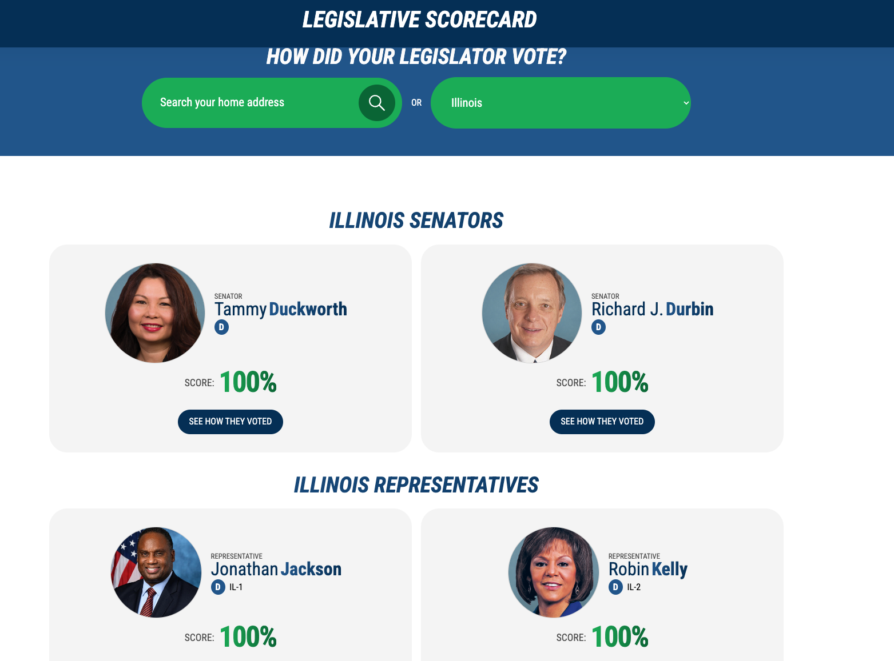

CPWR
Silica-Safe planning tool
A WordPress site built around a custom multi-step planning tool that generates job-specific safety plans contractors can save, export to PDF, or email.
Hi, I’m Tim.
I start by understanding the challenge you’re facing, the systems you already have, and what success looks like. Then I plan, build, and implement a solution that fits, and grows with you.
I’ve done this for unions and nonprofits, pro sports leagues, presidential campaigns, and federal agencies, and I communicate clearly with technical and non-technical people alike.
Chicago-based. Working with clients across the country.
Most projects start with one of these. If yours doesn’t fit neatly, that’s fine too.
New sites, migrations from legacy CMS platforms, custom themes and plugins, and rescues of builds that went sideways.
Interactive maps, wage calculators, planning tools, and dashboards: software that turns your data into action.
Ruby on Rails and React applications, from internal tools to public products, built to be maintained by your team.
WCAG 2.2 AA audits and remediation, and accessible design and code from the start, tested by hand.
Action Network, EveryAction, Mailchimp, Asana, and custom REST integrations that remove manual work.
Infrastructure setup, review, and cost savings, plus practical, well-scoped AI features inside the tools you use.
CPWR
A WordPress site built around a custom multi-step planning tool that generates job-specific safety plans contractors can save, export to PDF, or email.

AFSCME
Tracks every U.S. House and Senate vote that matters to one of the nation’s largest public-service unions, and lands visitors on their own state’s delegation.
A short call to understand the problem, your current systems, and what success looks like, then a written scope with real estimates.
Short projects of one to three months, ongoing engagements, or extra capacity for agencies that need to extend their team.
Documentation and tools your own staff can run. I explain the why, not just the how.
Tell me what you’re trying to build, fix, or replace. I’ll tell you honestly whether I’m the right person for it, and if I’m not, I’ll point you to someone in my network who is.